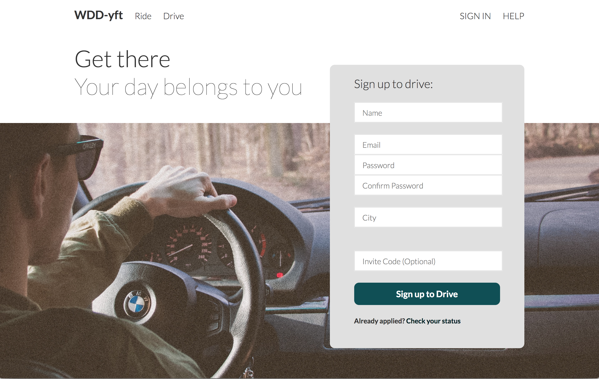

At the end of this hands-on, you should have something like the page below (split into two pics)
Step 1: Linking our files
Open the starting index.html file in your preferred browser.
Woah, this site looks nothing like the end product. It should look like this right now:
This is because we haven't linked our HTML and CSS files. Before we proceed, open index.html and style.css in your text editor so we can make this site look goooood.
Now, correctly link index.html to style.css.
Much, much better. You should have something that looks like this:
Without this link, our html structure wouldn't be able to know where to find our CSS selectors that make the site look siq and cool.
Step 2: Playing with fire Pseudo Selectors
Pseudo selectors are really cool because they allow us to put our elements in a special, temporary state. This helps draw the focus of the user to certain parts of the page and can also provide a response to user actions
Currently, if you place your cursor over the navbar options, nothing happens. Let's provide a visual cue to the user!
- Add the appropriate pseudo-class to nav-element so that when the cursor hovers over the navbar items, we can make something happen (once CSS properties are added);
- Now add a property to this pseudo selector so that the navbar elements are underlined when the cursor is over it;
- Change the property of the cursor so that the nav elements appear to be clickable via the cursor when the cursor is over them. Under what selector can this property go under??? Note: If you don't know what this visual looks like, visit one of your favorite websites and observe what happens to the cursor when you place it over a clickable item (like the nav bar). It's slight, but provides an almost subconscious cue to the user that something can be clicked.
Great! Now our navbar seems functional! It should look like this when you hover over it:

But we aren't done with our pseudo selectors. Our button does not visually indicate to the user that it can be clicked.
- Add the entire missing pseudo selector to our CSS so the button will provide some sort of visual response when we place the cursor over it;
- Slightly change some properties, like color or opacity, to provide a good indication of the button's action and to distinguish it from its normal state. Keep design principles in mind;
- Change the cursor property so it it seems clickable (like we did for the navbar);
- The pseudo state response is really fast. Feel free to add a transition to slow it down and make it more pleasing.
Note: sometimes, certain attributes require browser prefixes for browser compatibility, such as "-webkit-" for chrome and safari, "-moz-" for firefox, and "-o-"" for anyone that uses opera. If you're interested, feel free to Google this for more info.
This is what it should have looked like before:

This is what it might look like when you hover over your button:

There are so many possiblities and you should explore websites on your own when you get a chance!
Step 3: All on your own
Up for a challenge??
- In the html file, add the appropriate link tag to the entire phrase "Check your status here" so that when the user clicks this phrase, it will direct the user to some other page. Choose whatever page you would like;
- Give that tag an id;
- In the CSS file, select this specific tag and give it some cool properties in its normal state;
- Now, add a pseudo selector and change some properties for when your cursor is over the text so a user can easily recognize that it can be clicked;
- Add a pseudo selector for when you're clicking down on the link. Add new properties to differentiate it from its normal state;
- Finally, add a pseudo selector to indicate to the user when they have clicked this link before. Add new properties to differentiate it from its other states.
Hint: it is helpful to check your work in an incognito or private browser window when dealing with different pseudo selectors for links. Otherwise, your browser may remember your history of clicking the link and you won't be able to observe the different pseudo states since it will always appear in the state of being visited.
Awesome job! See how much you can do for just one tag? Hopefully you're getting the hang of these selectors now! The addition in step 3 was minimal, but can have a great effect. It should look similar to this:
Step 4: Some more CSS and fun extras
Now we can play around with other CSS properties to make our site look even better. Use your creativity and design knowledge to standout (or maybe blend in).
- Add some border properties to the button and form (whatever you think will work);
- Add a pseudo selector to create a good visual response when your cursor goes over gallery items under "Our Rides";
- Create a pseudo state just for the 1st and 3rd items. Then create a different pseudo state for just the 2nd and 4th items. Think of how many different ways you can select them.
We can even make fine changes to default elements for an even greater user experience. Take a look at the form in our html code. When you click an input box, you'll notice that there is an outline color (in this case, a lightly blue) to indicate to the user that they are focused on this box and can type here. This outline color is essentially a default pseudo-class. Let's change the input box to match the main colors of the website.
You can see this default attribute of outline color in action by selecting one of the input lines in web inspector, and then clicking :hov by "filter" and finally selecting :focus in the checkbox dropdown, which activates the :focus selector for just this element. Skimming through the web inspector, you'll notice that a new attribute within the :focus selector has appeared, outline, which is implementing the default -webkit-focus-ring-color.
- Because input has a default "outline-color", we don't need to create a pseudo selector, but we can change it within the actual input tag in order to override the default property!
- Add an outline-color to match the color of the normal state of the button. This is a minor touch that can go unnoticed, but actually adds a lot to the design.
Does your form now look like this when you type text?
Your final website should now look something like this and have some super sick pseudo states (maybe with your own creative touches!). These are two pictures, which is why it might look odd that the nav bar reappears.
For more selector practice, head to this great practice game made by @flukeout.